Formazione Scuola-Lavoro
Le FSL (Formazione in Situazione Lavorativa) sono attività che permettono agli studenti di fare esperienze pratiche e di sviluppare competenze utili per il futuro. In questa sezione presenterò le esperienze FSL che ho svolto durante il mio percorso scolastico, raccontando le attività a cui ho partecipato e ciò che ho imparato.
Soggiorno studio
a Dublino, Irlanda
Due settimane in Irlanda con la scuola: la mattina corso di inglese con prof madrelingua, il pomeriggio giro in città o escursioni. Classe mista con altri studenti del nostro istituto e anche ragazzi di altre nazionalità — quindi o ti sforzi a parlare, o resti muto (ho scelto la prima).
Le lezioni erano su grammatica, speaking e listening. Fuori dall'aula ho dovuto gestirmi da solo: fare la spesa, capire le indicazioni, ordinare al bar senza passare all'italiano. Sembra banale, ma ti sblocca parecchio.
Tornato a casa mi sentivo più sicuro a parlare inglese. Ho anche ottenuto la certificazione B1 — non è fluentissimo, ma almeno non panico quando devo scrivere una mail in inglese.
"A Dublino ho capito che l'inglese si impara parlando, non solo facendo esercizi sul libro. Due settimane lì valgono mesi di teoria."
Cosa ho imparato
Galleria fotografica
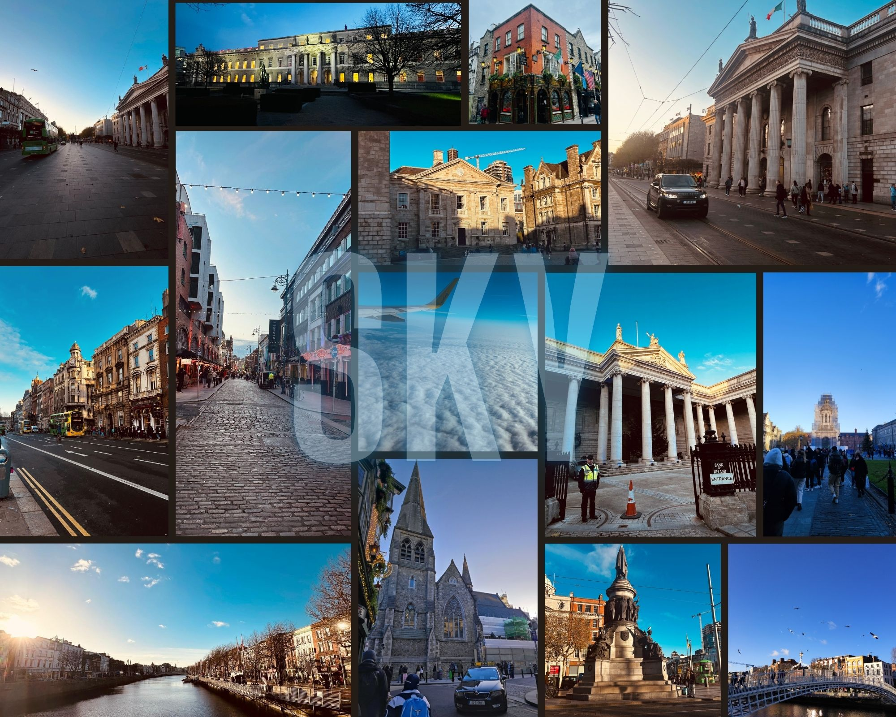
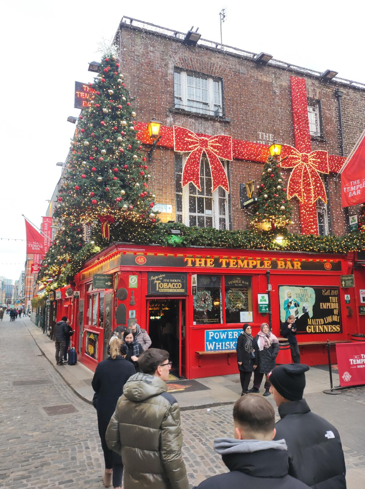
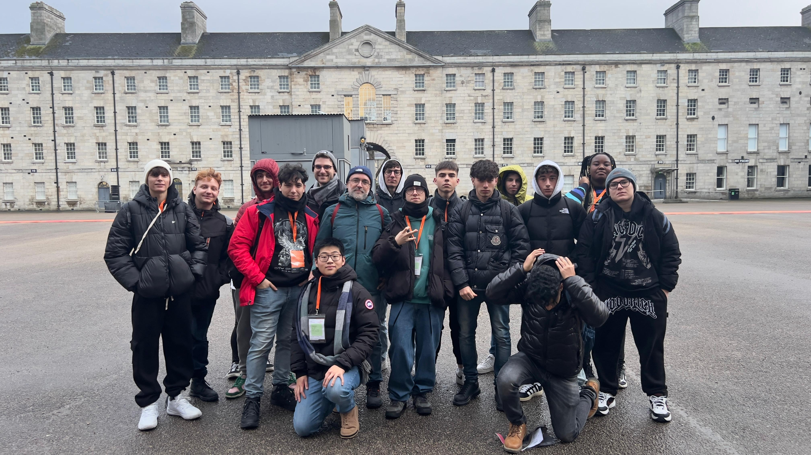
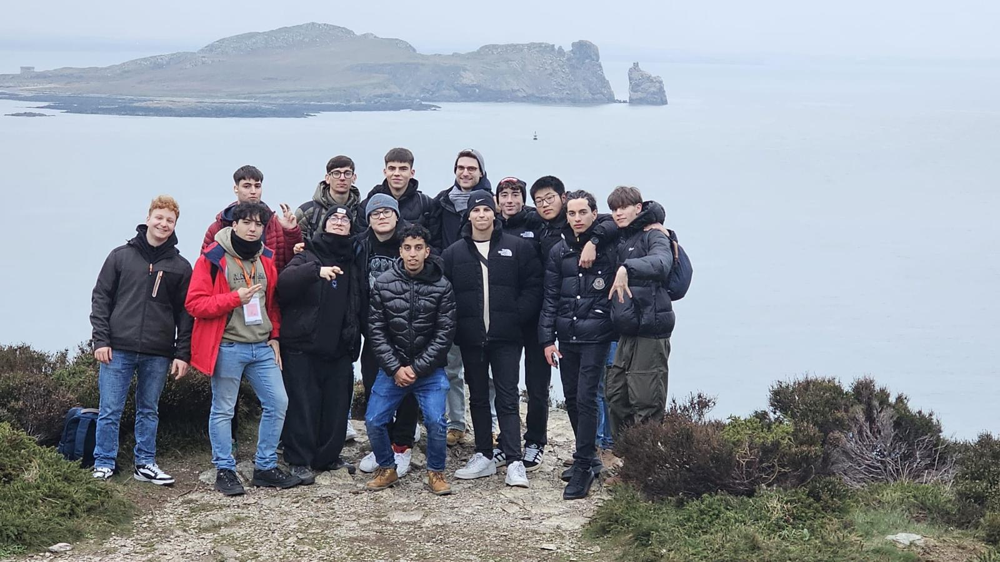
Corso Base
Robotica Industriale ABB
Primo approccio serio alla robotica industriale. Teoria su come funziona un robot a 6 assi, poi pratica su RobotStudio — il simulatore ABB dove costruisci la cella, programmi i movimenti e vedi se il braccio va a sbattere da qualche parte.
Ho imparato a configurare work object e tool, a scrivere traiettorie con MoveJ, MoveL e MoveC, e a gestire gli I/O digitali per far "parlare" il robot con altri dispositivi. All'inizio sembrava tutto astratto, poi hai la soddisfazione di vedere il robot che fa esattamente quello che hai scritto.
Ho preso la certificazione ufficiale ABB Base. Per chi vuole lavorare nell'automazione in Italia è un biglietto da visita concreto, non solo "ho fatto robotica a scuola".
"Prima pensavo ai robot come roba da film. Dopo il corso base li vedo come macchine con regole precise: sicurezza, precisione, e tanta pazienza nel debug."
Cosa ho imparato
Galleria fotografica
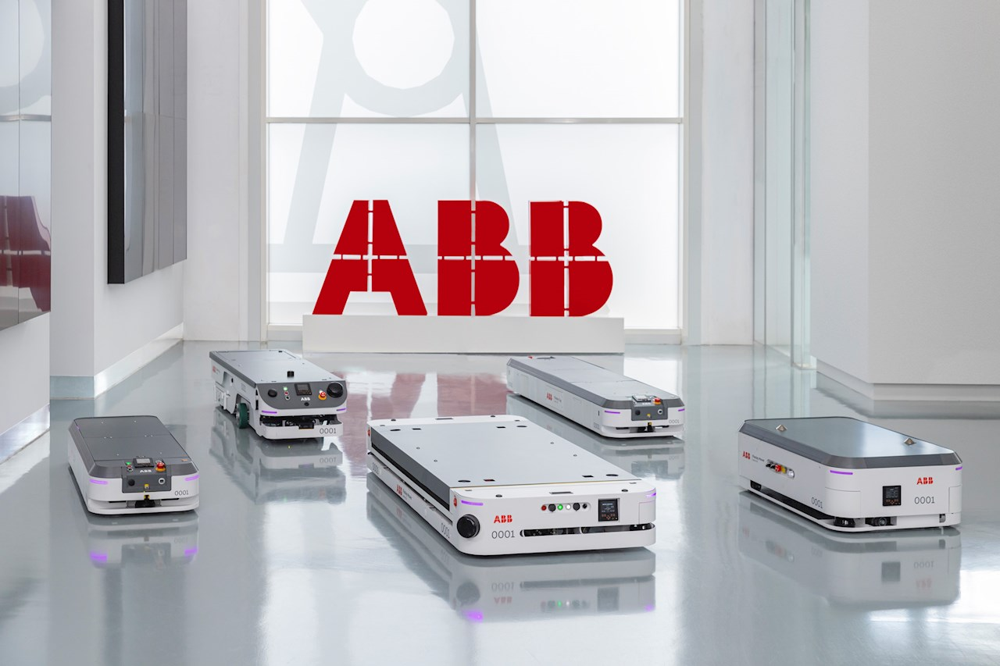
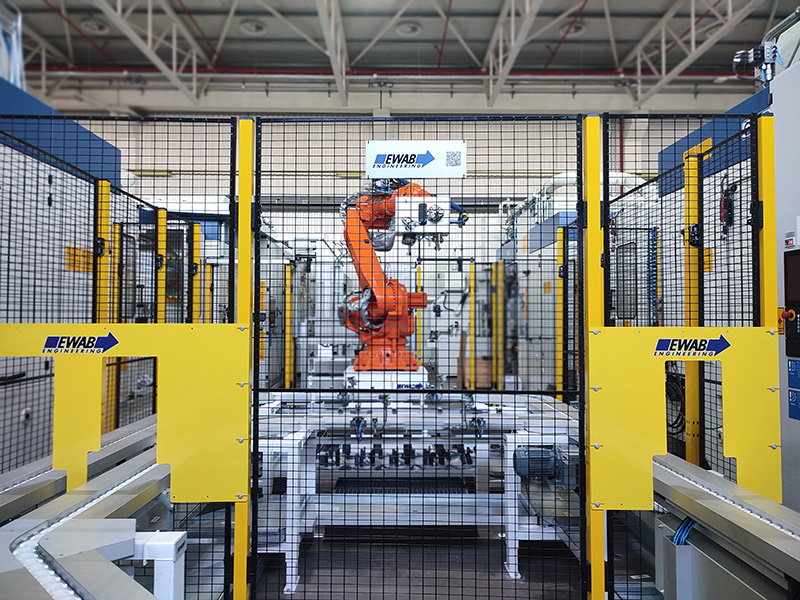
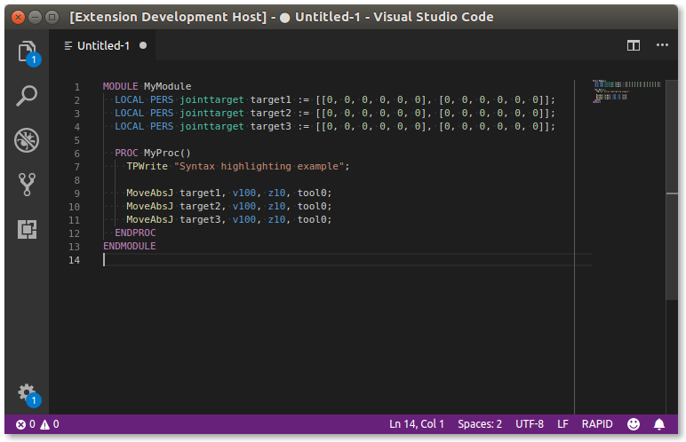
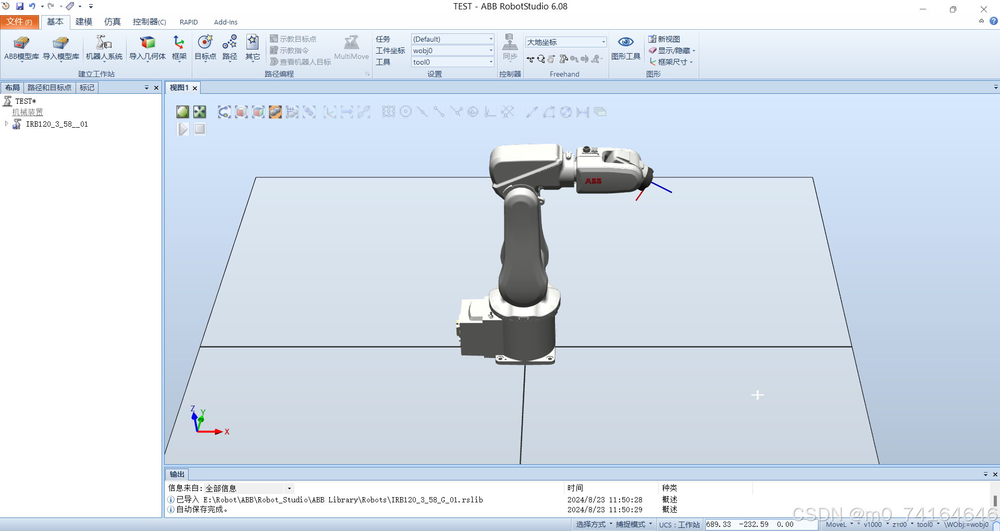
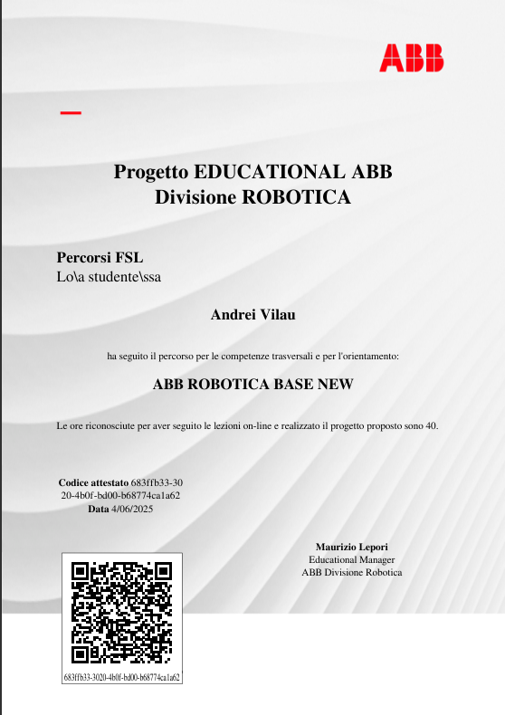
Corso Avanzato
Robotica Industriale ABB
Dopo il base, il passo successivo: programmazione strutturata in RAPID con moduli e routine, gestione errori in produzione, integrazione con PLC, tool custom e un assaggio di visione per riconoscere pezzi sul nastro. Roba da linea industriale vera, non solo demo.
Ho progettato una cella completa per un pick & place: robot IRB 1200, nastro, stazione di posa, logica per prendere e depositare i pezzi nel modo giusto. Il bello è ottimizzare i tempi di ciclo senza fare mosse pericolose — velocità sì, ma con la testa.
Con la certificazione avanzata mi sento più vicino al mondo dell'ingegneria dell'automazione: non solo "faccio muovere il robot", ma penso a come farlo in modo affidabile in fabbrica.
"Nel corso avanzato ho smesso di copiare esempi e ho iniziato a progettare la cella da zero. Quando il ciclo gira liscio, la soddisfazione è enorme."
Cosa ho imparato
Galleria fotografica
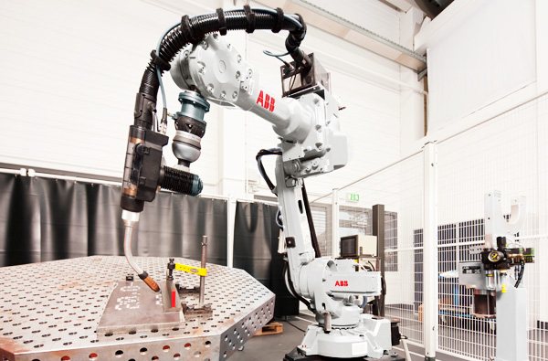
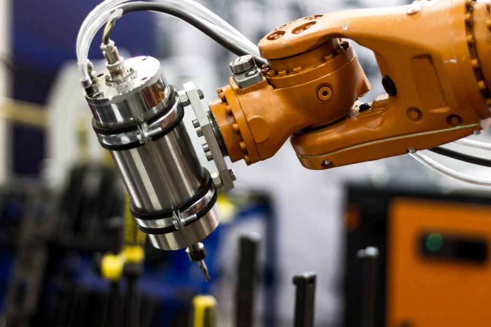
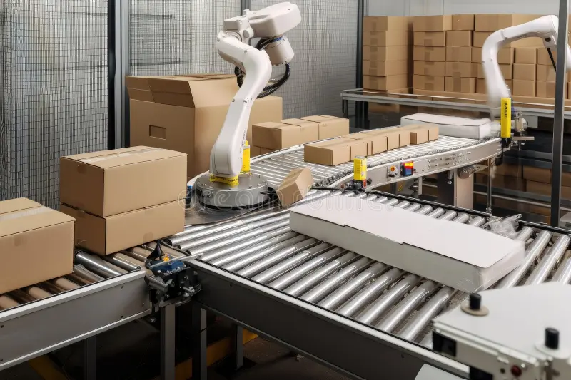
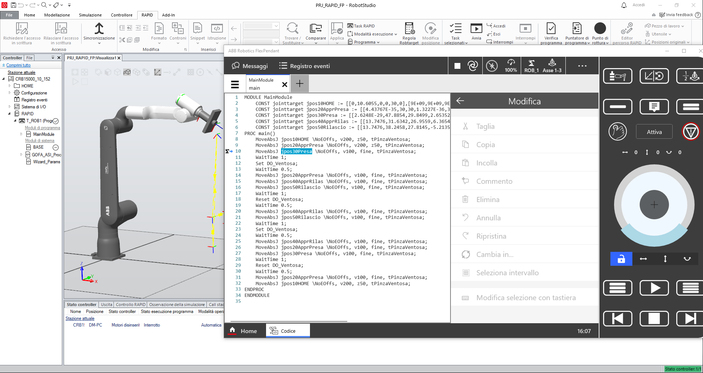
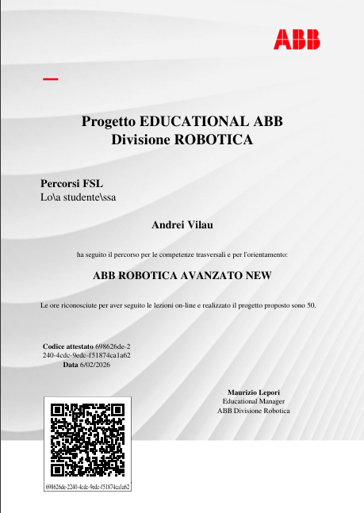